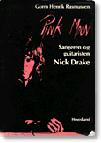

Nick Drake Home page | Discography | Lyrics | A-Z | Interviews | Club | News | Links
Nick Drake A-Z
An exploration into the world of the English singer & song-writer Nick
Drake.
I'm only going to say this once: Of all the fine singer
& song-writers emerging out of the late 60's and the 70's, Nick Drake
is the greatest. During his short lifetime (he died 1974 at age 26), he
produced three of the most beautiful, haunting and complex records of all
times - works of sheer sincerity, with a timeless aura of pure genius. These
pages are dedicated to his memory.
Categories that you will find in this Nick Drake A-Z section:
Appearance / Articles & Books / Birth & Upbringing / Boyd, Joe / Bryter Layter - the story 1969-70 / Cale, John / Cover versions & Tributes / Death / Drake, Gabrielle / Drake, Molly & Rodney / Education & Early song-writing / Fanzine / Five Leaves Left - the story 1968-69 / Guitar tabs / Guitar technique / Influences / Interviews / Kirby, Robert / Last years 1972-74 / Le Mythe de Sisyphe / Live performances / Lubow, Arthur / Martyn, John / Photos / Pink Moon - the story 1970-72 / Posthumous appreciation / Real Audio / Related music / Reviews / Robinson, Harry / Tanworth-in-Arden / Thompson, Richard / Wheeler, Paul / Witchseason
A
B
C
D
E
F
G
H
I
J
K
L
M
N
O
P
Q
R
S
T
U
V
W
X
Y
Z
A
Appearance
Paul Wheeler, a friend of Nick:
"Your first impression of Nick was of incredible elegance. Only later would you
notice his shabby lace-up shoes and ill-fitting jacket."
Nick's mother Molly:
"He was tall, very tall, about six foot three. His shoulders were
broad and his hips were extremely thin. He had an elegant,
very masculine body. But he always walked with his
shoulders hunched up And he always wore too small shoes. He hated being tall
and he hated being broadshouldered - God only knows why..."(Rasmussen, p.7)
Articles & Books
Here is a non-complete list of articles and books on the subject of Nick
Drake:
- Appel, Scott: "Fallen Leaf" Frets Magazine, April 1988 (analysis of Nick's guitar technique)
- Appel, Scott: "Nick Drake - A Soul With No Footprint - Beyond Tunings And Techniques" Pink Moon #13, 1998 (the original, unedited version of "Fallen Leaf")
- Appel, Scott: "Voice From Beyond" Acoustic Guitar, February 1999 (five-page article on Nick's guitar technique and lyrics, including sheet music for From The Morning)
- Arbman, Hans: "Poppoeten som är artisternas favorit" Dagens Nyheters Månadsmagasin april 1996 (a three-page article in Sweden's biggest morning paper)
- Barbieri, Giuseppe: "Nick Drake - Il Tramonto della Luna Rosa" Chitarre no 35, February 1989 ("Nick Drake - Wane of the Pink Moon": Article in an Italian guitar technique magazine, including transcriptions with notes and tablature of Pink Moon', Place To Be and Road)
- Barrera, Paul: "The Stories of Nick Drake and Tim Buckley" (1997) A 100-page paperback (of which 30 are dedicated to Nick), including biography, reviews, and a list of influences. Click here for a transcription of Barrera's introduction and ordering info.
- Boehm, Mike
: "Classic Of The Week" Los Angeles Times, December 1, 1994 (an article about 'Pink Moon')
- Boyce, Donnah
: "Depression, Manic Depression and Mr N.R.Drake" Pink Moon #11, July 1997
- Boyce, Donnah
: "Schizophrenia and Mr N.R.Drake" Pink Moon #11, July 1997
- Boyce, Donnah
: "A Tentative, Yet Serendipitous Discovery Upon Reading Wordsorth" Pink Moon #13, February 1998
- Briggs, Scott: Review of Pink Moon performed by Duncan Sheik & Gerry Leonard at Brooklyn Academy of Music, New York, U.S.A., 2/12/99
- Brown, Mick: "The Sad Ballad Of Nick Drake" Telegraph Magazine, July 12, 1997
- Browne, David
: "Nick Of Time" Entertainment Weekly, May 12, 2000
- Burgess, Steve: "Nick Drake" Dark Star Magazine 1979 or 1980
- Cameron, Iain: "Jazzin With Nick" An in-depth exploration of the connections between Nick and jazz/avantgarde. On this page only.
- Cameron, Iain: "Meeting Nick" A lovely recollection of meeting and becoming friends with Nick Drake at Cambridge. Lots of pictures and related info. Only to be found on this page.
- Cameron, Iain: "Poor Boy" A highly competent, thorough analysis of the song Poor Boy. On this page only.
- Cameron, Iain: "Minor/Major - River Man & At The Chime Of A City Clock" A highly competent, thorough analysis of the songs River Man and At The Chime Of A City Clock. On this page only.
- Corker, Philip: "Quintessential English Blues - A Short Life In Song" A beautifully written open letter. On this page only.
- Creed, Jason: "Pink Moon" An English Nick Drake fanzine. For more information, click here.
- Creed, Jason: "Talking To David Sandison. 24/4/96" Pink Moon Fanzine nr. 6/July 1996 (a really fine and interesting interview with the former press officer at Island Records)
- Creed, Jason: "Nick Drake" CD & Record Buyer, #5, January 1996
- Cullman, Brian: "Edges" Musician, 1979
- Ferrari, Luca: "Un anima senza impronte - Nick Drake: La vita, le canzoni" (Gammalibri - Kaos Edizioni Milano, 1986). An Italian book about Nick (the title means "A soul without mark - Nick Drake: the life, the songs"). The author is a well-known Italian rock writer who's also written biographies on Syd Barrett, Captain Beefheart and Third Ear Band (all in Italian/English).
- Ferrari, Luca: "The Sweet Suggestions Of The Pink Moon. Genealogy Of A Rock Myth" (Stampa Alternativa Edizioni, 1999) Book available in Italian/English, including a 4-track CD with Elton John's demo versions of Drake songs and an introduction by Lyn Dobson, who played flute on the title track on 'Bryter Layter'. Available (at appr. 25.000 Lira/£8/$13) via Pick Up Export: Via Jacopo Da Ponte 52, 36061 Bassano Del Grappa (VI), Italy. Fax: 0424-521446 E-mail: pickup@pickuprecords.it
- Frederick, Robin: "singing for nick" Robin Frederick recalls a meeting with Nick in 1966/67. On this page only!
- Frederick, Robin: "Truly. Madly. Deeply" MOJO, February 1999, p. 32-35
- Frederick, Robin: "A Place To Be" The MOJO article on the Web with a new title.
- Frederick, Robin: "Time Of Reply" An essay concerning Nick's songwriting technique.
- Frederick, Robin: "Interview" A very interesting interview with Cally, the man responsible for
putting together the remastered Nick Drake cd's as well as a new rarities album.
- Gilbert, Jerry: "Nick Drake: Death Of A 'Genius'" Sounds, December 14 1974
- Gilbert, Jerry: "Something Else For Nick?" Sounds, March 13, 1971 (the only known interview with Nick Drake himself)
- Gira, Michael (lead
singer of Swans/World of Skin): A short article on Nick Drake in Reflex magazine, issue 30
- Greene, Liz: "Dynamics Of The Unconscious" (Samuel Weiser, Inc. 1988) p. 149-157. Although his full name isn't mentioned it's obvious that these pages contains an astrological chart on Nick Drake. The chapter is called 'Depression'.
- Hogan, Peter K: "Desolate Island Discs" Record Hunter from Vox, June 1994
- Hogg, Brian: "Strange Things Are Happening" ?, 1989
- Holland, Suellen: "Things Still Behind The Sun" A review of Patrick Humphries' biography. Only to be found on this page.
- Humphries, Patrick: "Heart Of Darkness" Record Hunter supplement, Vox, March 1991
- Humphries, Patrick: "Brief Encounter" MOJO, February 1997, p. 62-71
- Humphries, Patrick: "Nick Drake. The Biography" (Bloomsbury Publishing, 1997) A 271-page book about Nick, released in November 1997. Since September 1998, a paperback version of the biography (featuring a different cover image) is also available - list price $24.95. It can be ordered on-line from Amazon (use the search-engine on the ND Files Home page)
- Humphries, Patrick: "Boy From The Black Stuff" The Independent, November 23, 1999
- Keeling, Andrew: "An Analysis of Five Leaves Left" Pink Moon #11, July 1997
- Keeling, Andrew: "Multiple Levels Of Meaning In Nick Drake's 'Pink Moon'" Pink Moon #16, 1998
- Keep, Chas: "Nick Drake" Record Collector, February 1992, p. 70-75
- Kelly, Rob: "Nick Drake" Déjà Vu 3/1977
- Kent, Nick: "Requiem For A Solitary man" NME, February 8, 1975
- Kirk, Kris: "The Leave Taking" Melody Maker, July 4, 1987 (an interview with Nick's sister Gabrielle Drake)
- Kornelussen, Frank: "Nick Drake" Trouser Press, January 1978
- Kurtz, Peter: "Nick Drake. Hanging On A Star" Goldmine, September 3, 1993
- Lindberg, Sebastian: "Nick Drake. Hudlös Musik" Sound Affects nr 7/1990 (A
Swedish music paper)
- Lubow, Arthur: "Nick Drake" Biography included in the LP version of "Fruit
Tree" - a 4 LP box set released in 1986 on Hannibal Records
- MacDonald, Ian: "Be Here Now" MOJO, January 2000, p. 32-47
- MacDonald, Ian: "Exiled From Heaven - The Unheard Message Of Nick Drake" The original, unedited version of the MOJO article. On this page only!
- Mackinnon, Stuart +2: Review of Poor Boy: A Tribute to Nick Drake at Vancouver East Cultural Centre 11/19/99
- Maconie, Stuart: "Forlorn. Nick Drake:A Hard Life" Q Magazine, 1994 (an
extended review of the 'Way To Blue' album)
- Milward, John: "Little Known But Not Forgotten" The New York Times, November 2, 1997
- McGrath, T.J.:"Darkness Can Give You The Brightest Light" Dirty Linen 42/92
- McKnight, Connor: "In Search Of Nick Drake" Zigzag 42/1974
- "The Nick Drake Song Collection" (Wise Publications / Music Sales, 1997) - a book consisting of guitar chords and piano arrangements for Nick's three albums plus Time Of No Reply and the last four recordings in 1974.
- Pistolini, Stefano: "Le provenienze dell'amore" ("The places love comes from") (Fazi Editore, 1998) An Italian book on Nick Drake, including a short novel about discovering Nick as a child in the 70's. Stefano Pistolini is a journalist and famous radio profile in Italy.
- Rasmussen, Gorm Henrik: "Pink Moon - Sangeren og guitaristen Nick Drake"
(Forlaget Hovedland, 1986) - a 114-page book in Danish, including the complete
lyrics

- Rasmussen, Gorm Henrik: "Melankoliens Lyse Digter" Information, October 15, 1980
(a Danish paper)
- Reif, Tony: "Nick Drake - A Gay Perspective" An essay concerning Nick Drake's ambivalent sexuality. Only to be found on this page (now with added postscript, January 1999)
- Ring, Kevin: "Joe Boyd And The Crazy Magic Of Nick Drake" Zip Code, 1992 (?) (an interview with producer Joe Boyd)
- Rock, Sheila: Review of Northern Sky - a Nick Drake Tribute in Leyland, Lancashire, England, 11/25/99
- Sandison, David: "Nick Drake - The Final Retreat" Zigzag nr. 49/1974
- Snyder, Michael: "Revisiting A Folk-rock Legend's Legacy" - An article on the Internet.
- Stone, Will: "Nick Drake - Suicided By Society" An essay published December 1998. Can be ordered from: Ambros Press, PO box 504, Woodford Green, Essex IG8 8PU, UK. UK: £3, overseas: £3 (Sterling) or $5 (US). Cheques made payable to K. Head (no foreign cheques)
- Thompson, Ben: "Still In A Class Of His Own" Independent On Sunday, May 29, 1994
- Thunberg, Fredrik: "I en död poets sällskap" Ettnollett 22/95 (a Swedish pop fanzine)
- Unterberger, Richie: "Nick Drake" A chapter in Unknown Legends of Rock 'n' Roll (Miller Freeman)
- Unterberger, Richie: Interview with Joe Boyd About Nick Drake, Sandy Denny & Syd Barrett
- Vrtacek, C.W.: "Of Brilliance And Darkness" Fairfield County Advocate, November 21, 1988
- Waterman, Ivan: "The Tragic Suicide That Has Haunted Gabrielle Drake For 23 Years" The Express, April 5, 1997 (interview with Gabrielle Drake)
B
Birth & Upbringing
Nick Drake is born in Rangoon, Burma on June 19, 1948, 00.45 Greenwich time.
The Drake family soon moves to Bombay, but the tropical heat has a bad
influence on Nick's father Rodney's heart condition. An apoplectic stroke in
1952 forces the Drake family to move to England, settling in Tanworth-in-Arden,
south of Birmingham, not far from Stratford-on-Avon. The brick house they live in is called Far Leys. Nick is four years old at the time.
Of Nick's early years it's said that he was much of an observer, spending a lot
of time on his own and that he often could be found walking alone by the sea.
The traces of his charachteristic melancholy and inwardness seem to lead back
to his early childhood. Rodney Drake:
"His heart often carried him away. He carried other people's troubles and
worries on his shoulders, and was always terribly depressed when something
happened to somebody he knew. And he was always the one that friends would come
to with their worries. Of himself he rarely spoke..." (Rasmussen p.51).
Nick's interest in music awakened at an early stage of his life. Molly and Rodney Drake:
"As a baby he loved to conduct. Whenever the music started he would be up out of chair waving his hands. I think at one time that he had an ambition to become a famous conductor. He dearly loved classical music and listened to it all the time. He picked up on the piano quite early and was rather good. He was fascinated by some of the legends and myths incorporated into classical pieces. He loved a good story, even if some of them scared him half to death." (quote from McGrath)
Boyd, Joe
Born 1943 in Boston. Producer of Nick's two first albums, 'Five Leaves Left' and 'Bryter Layter'.
Boyd was in the sixties the manager and producer of Fairport Convention. He
also produced Pink Floyd's debut single Arnold Layne in 1967. During the seventies and eightes,
Boyd has produced various acts, like Richard Thompson, John martyn, Eric
Clapton, 10 000 Maniacs and R.E.M. He is now running the record company
Hannibal Records, currently working with a Cuban and a Hungarian female singer. Boyd about Nick Drake:
"Of all the albums I ever made, the two I produced by Nick are the ones I'm
most proud of. I listen to them often because he was extraordinarily good -
nothing he ever did was less than striking, and he had the gift of writing
melodies of incredible beauty." (Keep, p.70)
Read also this excellent interview with Joe Boyd
Bryter Layter - the record
Nick's second album, released in 1970 on Island Records. Also the title track
of that album, an instrumental. The title, according to Chas Keep, is "a dire
pun on the enunciation of BBC weather broadcasters at the time". (Keep, p.
72)
See Reviews for contemporary reviews of 'Bryter Layter'.
Bryter Layter - the story - 1969-70
The Hampstead room, where Nick composes the songs of this album, is on the
ground floor of a Victorian building, in a room with towering ceilings and a
single hanging light-bulb for light. In the winter the room is so cold that he
takes the mattress off the bed, drags it near the gas fire, and piles up
blankets for warmth. He says he wants to be alone to work. During a couple of
months he writes all the songs for the album.
In the studio, Nick's search for perfection continues. Not satisfied with the
sound and the arrangements of violins, he rejects the finished recordings. The
date of release is postponed until March 5, and then postponed again. Joe Boyd
and Nick return to the studio. All in all, the recording of the album lasts
about nine months.
There are no existing outtakes from 'Bryter Layter', indicating that Nick had
no more songs than the ten on the record, but there is also a theory saying
that he had more songs, but didn't want to play them. The reason being that he
was so proud of the three instrumentals on the record that he was afraid of
being forced to leave out any of them in favor of a non-instrumental.
He doesn't have to worry, though. Producer Joe Boyd and engineer John Wood
calls 'Bryter Layter' the one perfect album they have made, a masterpiece. Boyd
is now convinced it's going to make Nick Drake a star, but he is wrong. It
doesn't sell good either. Nick is crushed, although Island Records is satisfied
with the 15.000 copies sold.
One critic calls 'Bryter layter' "the most intelligently produced album of its
kind I've ever heard", whilst others describe the music as "near perfect" (Zig
Zag) and " a triumph of eclecticism" (Rolling Stone).
C
Cale, John
Born 1940 in Garnant, South Wales. The early member of The Velvet Underground plays viola and harpsichord on Fly and celeste, piano and organ on Northern Sky (both from 'Bryter Layter')
The following anecdote was told by Richard Ross who snapped it up from a radio interview with Joe Boyd aired in July 1996: "Boyd was doing some work with John Cale, and during a break in recording Cale asked to hear some of the other artistes Boyd was working with, so he played him some of Nick's work. Cale was very enthusiastic and more or less demanded to meet Nick. He made Boyd phone Nick up there and then to tell him that Cale was on his way in a taxi to see him. A few days later the two of them returned with the arrangements for "Northern Sky".
Cover versions & Tributes
A list of cover versions of Nick Drake songs
Of songs about or dedicated to Nick Drake can be mentioned Solid Air by John
Martyn:
"You've been getting too deep
You've been living on solid air
You've been missing your sleep
And you've been moving through solid air"
Martyn wrote this song (from album 'Solid Air', Island, 1973) as a kind of reply to the "fight" between him and Nick around
1973. (see under Last years).
More John Martyn: On his first album, 'London Conversation' (1968), Martyn recorded a song by Robin Frederick - Sandy Grey - which, apparently without Martyn's knowledge, was written about Nick Drake.
SANDY GREY
Oh, Sandy Grey
Are you going away?
Leave me a message before parting.
Time has changed you
And the things that pained you
Are the things you think of as you're starting.
Oh, Sandy Grey
It's only this I pray
That you would stay here one more day in laughter.
Won't you hang around and hold me
Repeat all the lies you told me
Do your rambling after.
Oh, Sandy Grey
Don't leave me just today
Don't think of the road you'll be going
Think of all the time
And the days we've had to mind
And a future there's no way of knowing.
Oh, Sandy Grey
I thought I heard you say
You haven't heard a word I've been speaking
There's no use in tryin'
You're escaping from my mind
And I'll never see the world you're seeking.
Oh, Sandy Grey
Are you going away?
Leave me a message before parting
Time has changed you
And the things that pained you
Are the things you think of as you're starting.
© 1967 Robin Frederick
The Boor Boy Is Taken Away is the title of a Richard Thompson song, which apparently seems to be about Nick. It's sung by Linda Thompson, and included on her compilation album 'Dreams Fly Away', but originally released on Richard and Linda's 1975 album, 'Pour Down Like Silver' (thanks to Suellen Holland for the transcription).
THE POOR BOY IS TAKEN AWAY
Hold him, poor boy, you took him for fun
He dressed for the tinkering trade
He dressed for the tinkering trade
Now the poor boy is taken away.
No use waiting like a ghost in a dream
The world has no comfort to bring
The world has no comfort to bring
He left you, took everything.
No use standing, waving adieu
The penny won't drop in your mind
The penny won't drop in your mind
The old flame has left you behind.
No use crying in a room full of memories
You'll never find yesterday
You'll never find yesterday
And the poor boy is taken away.
About 30 seconds of 'Cello Song are
included in the British film Ratcatcher.
Roy Montgomery has recorded a piece called E.N.D. (Elegy For Nick Drake) on a 7" (Drunken Fish DFR 27)
Mogwai's contribution to the compilation album The Carve-Up (Loose Recordings) is called 'Nick Drake'. The track has also been released as a b-side.
Two Nick Drake-related albums from 1999: The Rabbit's Hat: Flesh & Nail is a cover album, emphasizing on material from Pink Moon and Time Of No Reply. Victor Johnson's solo album, Tangled, is dedictaed to Nick Drake's memory. Both albums are presentated further on this page
The film Hideous Kinky starring Kate Winslet, features Road,
appropriately in a 'road-tripping' scene.
According to Mike Brosnan, David Wilcox's album 'Nightshift Watchman' has a song called
Come Away To Sea and the tune is taken from Place To Be on Pink Moon.
The music of Nick Drake is featured in two recent movies: Star Maps (1997, director: Miguel Areta) features the instrumental Horn, which is also included on the soundtrack album 'Star Maps' (Geffen, 1997).
The second film is Practical Magic (director: Griffin Dunne, starring Sandra Bullock, Nicole Kidman and Dianne Wiest) which premiered in September 1998, and features Nick singing Black Eyed Dog (the song is however not included in the soundtrack album). The song occurs in a scene where Sandra Bullock's first husband dies.
Fruit Tree is featured on the soundtrack of Twentyfourseven, a b/w movie directed by Shane Meadiws and starring Bob Hoskins.
River Man featured in Dreams With The Fishes movie soundtrack
English singer/song-writer Robyn Hitchcock released his song about Nick, "I Saw Nick Drake", on an album called A Star For Bram.
I SAW NICK DRAKE
I Saw Nick Drake
At the corner of time and motion
I caught his eye
And he caught mine
I said, "You're tall!"
He said, "No deeper than tomorrow's ocean"
I saw Nick Drake
And he was fine
And we're in bloom
Yes we're in bloom
I saw Nick Drake
As we were carrying the ice together
I saw his face
Beneath the glass
The net was gone
And all the strawberries of English weather
I saw Nick Drake
I saw him pass
Right through this place
And we're in bloom
Yeah we're in bloom
I saw Nick Drake
The habits of a lifetime
Will lay you low
Into your grave
And when you're gone
You take the whole world with you
I saw Nick Drake
I saw him wave.
Where The Ocean Meets The Sky is a poem about Nick Drake by Amanda Stanley:
Where The Ocean Meets The Sky
You saw the river and drifted for the sea,
You saw the rainfall and the turning of the leaves,
You saw the snowfall and became the winter frost,
You walked on thin ice and pushed a heavy rock.
You whispered softly and no one heard your words,
You watched the clouds drift and questioned the absurd,
You felt the chill breeze as you stepped into the flames,
You spoke of beauty yet only beauty knew your name.
You walked with shadows and disappeared into the night,
Now you walk with angels, as they guide you to the light,
But with the angels is where you always have belonged,
For the sound of heaven it is the sound of your sweet song.
And when the bell chimed, and when the last leaf left your tree,
And as the moon waned, and as the starlight left your eyes,
A hush of silence drifted down your country lanes,
And took you onward to where the ocean meets the sky.
Copyright © 2002 Amanda Stanley
The song I Wish on Blur's guitar player Graham Cox's solo album The Sky Is Too High (Transcopic, 1998) features the following line: "I wish I could bring Nick Drake
back to life / He understands."
An Irish band called Lir have covered Saturday Sun
and Northern Sky. They also have two records out but are a little more rock oriented. (info from Graeme Slattery)
English group The Kitchen Cynics have written a song about Nick, called Now's The Time. It's included on a casstte called 'The Quiet Ones' (available from Bliss/Aquamarine, 68 Barlich Way, Lodge Park, Redditch, Worcs, B98 7JP, England).
NOW'S THE TIME
Clouds have passed now, see the wind blow hairy witches through the air
He went to bed when trees were green but felt the blackness everywhere
He couldn't seem to find the rhyme
Watched the seasons for a sign
But now, now's the time
Now's the time for Nicholas.
Shoulders hunched he walked the pathway through the alley to the pond
Sending signals, shunning small talk, hoping someone would respond
He couldn't seem to find the rhyme
Watched the seasons for a sign
But now, now's the time
Now's the time for Nicholas.
Skimming stones and counting ripples, he waited for the breeze to die
So much effort just to feel things, eventually he didn't try
He couldn't seem to find the rhyme
Miscellaneous use of Nick's music the recent years include Nike's use of Know for a training-shoe commercial, the appearance of Fruit Tree and Time Has Told Me in TV drama 'Heartbeat', Horn in a documentary about skinheads (!) and Hazey Jane I, used as background music on the 'Food and Drink Programme' in the UK.
British group The Lilac Time, with singer Stephen Duffy, took their name from Nick's song River Man.
Another tribute to Nick Drake is The Dream Academy's hit Life In A Northern Town from
1985. The Dream Academy also dedicated their debut album, 'The Dream Academy' (Blanco Y Negro, 1985), to Nick.
The Cure performed a Nick Drake song in 1991 when they were recording
their MTV's unplugged concert. The song was Time Has Told Me. It wasn't in the broadcast but the song was performed. (thanks to Tomi Tarkiainen for this info)
English group Faith Over Reason has recorded songs by Drake. Their vocalist Moira Lambert sang on St Etiennes debut hit Only Love Can Break Your Heart.
Brooklyn group Ida have a song called Nick Drake on their debut album 'Tales Of Brave Ida' (Simple Machines, 1994) and they also include a song from 'Pink Moon' in their live set.
Brazilian singer Renato Russo has done a cover of Clothes Of Sand. His records are distributed by EMI.
According to Juan Maniel of Spain, the Spanish indie group Los Planetas has done a beautiful cover of
"Northern Sky" translating the lyrics into spanish: "Cielo del Norte"
on their "Punk" single.
New Zeeland band The Chills:
"Others made the the same mistake
Men like Wilson, Barrett, Walker, Drake
On the journey they were forced to make"
(Song For Randy Newman Etc, from 'Soft Bomb', Slash, 1992)
On Porcupine Trees's album 'The Sky Moves Sideways' (Delerium Records, 1996) the dedication reads:
"The Sky Moves Sideways is dedicated to Terumi and the spirit of Nick Drake"
Composer Andrew Keeling has written two pieces dedicated to Nick Drake's memory: 'Nekiya', a Chamber Concerto for solo percussion and chamber orchestra, and 'Auguries of Innocence', written for the Hilliard Ensemble in 1993. He has also dedicated an organ piece called "Assumptio" to the memory of Molly Drake. It will be performed by Robert Fielding in Clifton Cathedral, Bristol on January 11th, 1997. Keeling: "Molly said that she often used to play it at the piano. Molly was of great encouragement to me, because for one reason or another, I began to compose rather late. As a thankyou, I dedicated Assumptio to her".
Nick's music, 30 seconds of Saturday Sun, is included in the soundtrack to the movie "En avoir (ou pas)" (1995) aka "To Have (or not)" (1995). It's the debut film of French director Laetitia Masson, and has been described as a love story in the vein of "Reality Bites", only better.
Horror/fantasy writer Poppy Z. Brites mentions Nick Drake in her debut novel 'Lost Souls' (Penguin, 1993). This modern vampire story includes a lot of references to rock music, such as Tom Waits, Velvet Underground and Bauhaus, and the following quote is from a scene in which the main character, called Nothing, shoots up heroin for the first time:"Still got that vein? Okay, hold it..." He held up the syringe and flicked the needle's tip with his finger. "Don't worry. I can smell you're scared, but this is good shit. There goes the bubble. Safe as milk, like Nick Drake used to say." (Lost Souls, p. 135)
Although it's not unlikely he did at some time, I have never seen or heard anyone suggesting Nick used heroin.
(Boston-based?) singer Jabe Beyer frequently includes a version of "Things Behind The Sun" in his live set. It's not yet on any record.
According to the McGrath article in Dirty Linen, another tribute album has been mentioned, not yet made. The contributors were supposed to include Elton John, Phil Collins, John Martyn, Robyn Hitchcock, Henry Kaiser and Richard Thompson. As in the case of Phil Collins, I sincerely hope this project will never see the daylight...
A
B
C
D
E
F
G
H
I
J
K
L
M
N
O
P
Q
R
S
T
U
V
W
X
Y
Z
Compiled by Mikael Ledin (text + content) and Mats Renvall (graphics)